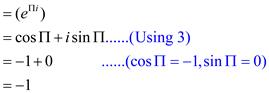

To Prove: 
Here,  is the
complex root of unity such that: .
is the
complex root of unity such that: .
There are exactly n complex roots of unity: for .
Therefore, is the principal root of unity.
Step 1: Let
Now substituting the value of as
For , the expression in can be written as: .
Therefore,
Step 2: According to the definition of the exponential of a complex number:
Since,

Hence,
Consider the given coefficient vector a = (0, 1, 2, 3). The Discrete Fourier transformation (DFT) is the vector y=. The DFT can be expressed in the general form(y= ) as follows:
Now, multiply the vandermonde matrix and coefficient matrix. Thus, the resultant matrix is as follows:
…… (1)
Each row value is equals to corresponding element in the left
side matrix. Therefore solve the right hand side matrix to
calculate the values of
and .
.
Consider the values and to calculate the vector elements.
Thus, …… (2)
Similarly calculate the value of 
…… (3)
Put the value in equation (3)
Thus,
Calculate the value of  as
follows:
as
follows:

Hence, …… (4)
Calculate the value of as
follows:
Hence, …… (5)
From equation (2) , (3) ,
(4) and (5), the value of
and are
as follows:
The polynomials are as follows:
and
The evaluation is done using the fourth roots of unity that is, .
• Call RECURSIVE-FFT ((-10, -1,0,0)) and evaluate to (-11, -10-i, -9, -10+i)
• Now evaluate the original function call, the values are ,.
• On changing the values, we have and
• Similarly, if it is required to compute the FFT of other polynomial, get the FFT of B(x) as
On interpolation, the result is as follows:
The polynomial is:
Discrete Fourier transform (DFT) is invertible with
 =
=
where is the
inverse of vandermonde matrix .
.
So,

where is the root of unity.
The inverse DFT which is is calculated as follows.
where is the inverse DFT, is the coefficient vector. is the nth root of unity.
At first compute the Discrete Fourier transform (DFT) to obtain the value of then flip the sequence by fixing the .
Pseudo code of is as follows:
INV-DFT (y)
// store length of vector y
1. n= y. length
// check the value of variable n
2. if n==1
//return the value of vector
3. return y
// is the principle nth root of unity and is its inverse
4. 
5. 
//split the vector into even and odd part and store it into coefficient vector of y
6.
7.
//for loop is used to flip the sequence
8. for j=0 to n/2-1
9.
10.
//it is used for mapping
11.
//if statement is used to find the value of coefficient vector
12. if j=0
13.
14. else
15.
//return the column vector
16. return a
• In line first store the length of vector y into variable n so the worst case complexity will be.
• Line 2-3 is used to check the element of DFT, so the complexity will be.
• Line 5-6 of pseudo-code is used to define the coefficient vector for polynomial so the complexity will be.
• Line 8-9 is used to find the value of so each invocation takes.
• Line 12 and 14 calculate the value of  by dividing
every term to n. This creates another factor which can be
neglected by doing the division step along with the previous
step.
by dividing
every term to n. This creates another factor which can be
neglected by doing the division step along with the previous
step.
So the total time complexity will be as follows:
By using master’s theorem, the following time complexity is obtained:

The highest order term decides the complexity.
In the above recurrence of running time,  represent
the length of input vector. Evaluate a polynomial of degree
n at nth root using inverse DFT.
represent
the length of input vector. Evaluate a polynomial of degree
n at nth root using inverse DFT.
By using FFT (Fast Fourier Transform) which takes the advantage of the special properties of the complex roots of unity.
FFT method employs a divide and conquer strategy using even
index and odd index coefficients of A(x) separately to define the
three-new degree bound n/3 polynomials , and
and
These polynomials are expanded as follows:
Evaluate the degree bound n/2 polynomials and at the points
Combine the results obtained.
By applying the halving lemma, the list of values consists not
of n distinct values but only of the n/3 complex  roots of
unity with each root occurring exactly twice.
roots of
unity with each root occurring exactly twice.
Therefore, the polynomials , and
of
degree bound n/3 are recursively evaluated at the n/3 complex
roots of
unity.
These sub problems have the same form as the original problem but are half the size.
Thus, an n element computation is divided into two n/3 elements computations.
This decomposition is the basis for the following recursive FFT algorithm which computes DFT of an n element vector where n is the power of 3.
For n to be a power of 3, that the cube of the complex
roots of unity are the n/3 complex roots of
unity apply the cancellation lemma,
Therefore,
Now, write and define for i=1,2,3…
The recurrence which is obtained is:
Solving the recurrence relation using Master’s theorem:
Compare the above recurrence by standard formula:
Here, a=3, b=3 and f(n)=n. Computing the value of the value obtained is =1
On comparing the values of and f(n) which are same the case 2 of master’s theorem is applied.
So, the final running time complexity is:
The procedure is described by the following algorithm:
RECURSIVE-FFT-INVERSE(y)
1 n=y. length
2 if n==1
3 return y/n
4 end if
5
6
7
8
9
10 for k = 0 to do
11
12
13
14 end for
15 return a
To prove that and inverse are well defined in the given system , suppose be the ring of integers .
Where,  is a
positive integer and is even
integer
is a
positive integer and is even
integer
Then,
Now, construct a polynomial  such
that
such
that
Where and
polynomial is of
degree-bound with
coefficients from
Now, define  such
that
such
that
Then, the vector is discrete
Fourier transformation of the coefficient vector
Now, show that product and sum of two distinct tuples of the
vector  is again
the tuple of
is again
the tuple of
Since,
Then,
Then, take product and sum of
And
Then, the product and the sum of two distinct tuples of the
vector is again a
tuple of
Therefore, discrete Fourier transformation () is well defined
Now, write the discrete Fourier transformation as the matrix product
Then,
Where, as the principal root of unity
Since, the square matrix is a non-singular matrix in
That is
Then, exists
Now, multiply from left side by in the equation
Then,
Or
Then, it can be written as
Since, exists
Therefore, is well defined in .
Hence, and inverse are well defined in the system.
Finding the coefficient of a polynomial of bounded degree
MULTIPLYING-OUT algorithm is used to find the coefficients of polynomial P(x) of degree bound n+1 that has zeroes. This algorithm uses the property of recursive calls; every recursive call made here is of size.
The Multiplying-Out algorithm takes input as the list of values that are provided by the user. After this, it is checked whether the list has one single item or not, if the condition satisfies, return the value of. It is returned because the polynomial has the value zero at zj, only when the polynomial will be a multiple of. After this, the list has been divided into two lists (P2(x) and P2(x)) and recursion is done in list items.
After this, fast Fourier Transform is done on both lists and their values is stored in variables y1 and y2. Make use of for loop to calculate the value of y and then perform Fourier transform inverse storing values in P(x).
Multiplying-Out algorithm is given below:
MULTIPLYING-OUT ALGORITHM: (
// use of if condition to check whether list has a single element or not
1. if n = 1
return
2. else
// Divide the list into two parts, where P1(x) contains list items 1 to n/2
// and P2(x) contains rest of them and recursion is performed on both list items
3. P1(x) = Multiplying Out
4. P2(x) = Multiplying Out 
// perform fast Fourier transform on P1(x) and P2(x)
5. (y1 is a vector of 2n values).
6. (same for y2)
// Compute the point wise product y of y1; y2 in linear time
7. for()
// Perform inverse of evaluation to find the coefficient of polynomial using
// point-value representation
8.
For determining the runtime, following should be taken into consideration:
1. Lines 1, 2, 7 take  time in
total.
time in
total.
2. There are 2 recursive calls to Multiplying Out of size n=2 each (lines 3, 4).
3. There will be a total of three calls FFT (fast Fourier transform) of size 2n
(lines 5, 6, 8).
Therefore, total running time will be:
Considering the recursion tree of Multiplying-Out, the height of
this tree will be . It is so
because at every recursive call made, the input size is partitioned
into half. This can be performed only in times before
n is minimized to the base 1.
. It is so
because at every recursive call made, the input size is partitioned
into half. This can be performed only in times before
n is minimized to the base 1.
At each level  (with
=
0 making it the top level). The algorithm will make
(with
=
0 making it the top level). The algorithm will make  recursive
calls of size . The
algorithm will have cases of
extra work
for level , the FFT
(fast Fourier transform) of current active calls have been carried
out making use of roots of
unity point.
recursive
calls of size . The
algorithm will have cases of
extra work
for level , the FFT
(fast Fourier transform) of current active calls have been carried
out making use of roots of
unity point.
In reality, it is found that it is useless to add any value for the recursive calls stated in since their work is counted in the extra work in lower branches of the tree.
So, at level 0, the total work is
At level 1, the running time can be given as:
At level l, the running time can be given as:
Therefore, the running time at any particular level is .
.
There will be levels in
the algorithm which takes time of.